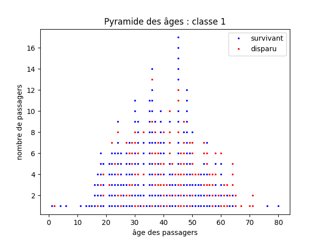

Étude des passagers du Titanic⚓︎
1. Le fichier titanic.csv⚓︎
- Téléchargez le fichier titanic.csv
- Ouvrez le avec un éditeur de texte (le Bloc-Notes de Windows, par exemple).
- Que remarque-t-on sur la structure de ce document ?
Les fichiers CSV (pour Comma Separated Values) sont des fichiers-texte (ils ne contiennent aucune mise en forme) utilisés pour stocker des données, séparées par des virgules (ou des points-virgules, ou des espaces...).
2. Utilisation d'un tableur⚓︎
- Ouvrez LibreOffice Calc
- Depuis Calc, ouvrez le fichier
titanic.csv. - Combien y a-t-il de passagers dans cette liste. Cela correspond-il à la totalité des passagers enregistrés sur le Titanic ?
- Cliquez sur
Données / Autofiltreet répondez à la question suivante : quel est le nom du passager de sexe masculin, âgé de 26 ans, ayant embarqué à Cherbourg en 1ère classe ?
3. Exploitation avec Python⚓︎
Il est possible d'exploiter en Python les données d'un fichier csv. On peut, par exemple, utiliser le module csv.
3.1 Récupération des données⚓︎
- Dans Thonny, copiez-coller le code ci-dessous :
1 2 3 4 5 6 7 8 | |
passagers en console.
La structure (complexe) de la variable passagers est appelée une liste de dictionnaires.
- Tapez
passagers[0]en console et observez le résultat. - Tapez
passagers[12]['Nom']en console et observez le résultat.
3.2 Début d'analyse⚓︎
-
Copiez-collez-exécutez le code ci-dessous :
Que calcule ce code ?1 2 3 4 5
s = 0 for passager in passagers : if int(passager["survivant"]) == 1 : s = s + 1 print(s) -
Modifiez le code ci-dessus pour qu'il donne le nombre de passagers de troisième classe.
- Miss Louise LAROCHE a-t-elle survécu au naufrage ?
3.3 Fonctions avancées⚓︎
3.3.1 Taux de survie en fonction de la classe⚓︎
- Copiez-collez-exécutez le code ci-dessous :
1 2 3 4 5 6 7 8 9
def survie_classe(classe): surv = 0 tot = 0 for passager in passagers : if int(passager["classe"]) == classe : tot = tot + 1 if int(passager["survivant"]) == 1 : surv = surv + 1 return surv / tot - À l'aide de cette fonction, donnez le taux de survie en 1ère, 2ème et 3ème classe.
3.3.2 Taux de survie en fonction du genre⚓︎
Modifiez le code précédent pour créer une fonction survie_genre(sexe) où sexe sera le paramètre "male" ou "female", rentré par l'utilisateur.
Exemple d'appel de la fonction :
1 | |
3.3.3 Taux de survie en fonction du genre ET de la classe⚓︎
Modifiez le code précédent pour créer une fonction survie_genre_classe(sexe, classe) où
- sexe sera le paramètre "male" ou "female"
- classe sera le paramètre 1, 2 ou 3
Exemple d'appel de la fonction :
1 | |
3.4 Exploitation graphique⚓︎
3.4.1 Pyramide des âges totale⚓︎
Le code suivant permet de générer la pyramide des âges de la totalité des passagers, en faisant apparaître d'une couleur différente les survivants et les disparus.
1 2 3 4 5 6 7 8 9 10 11 12 13 14 15 16 17 18 19 20 21 22 23 24 25 26 | |

3.4.2 Pyramide des âges par classe⚓︎
1 2 3 4 5 6 7 8 9 10 11 12 13 14 15 16 17 18 19 20 21 22 23 24 25 26 27 | |

En faisant de légères modifications, on obtient aussi :